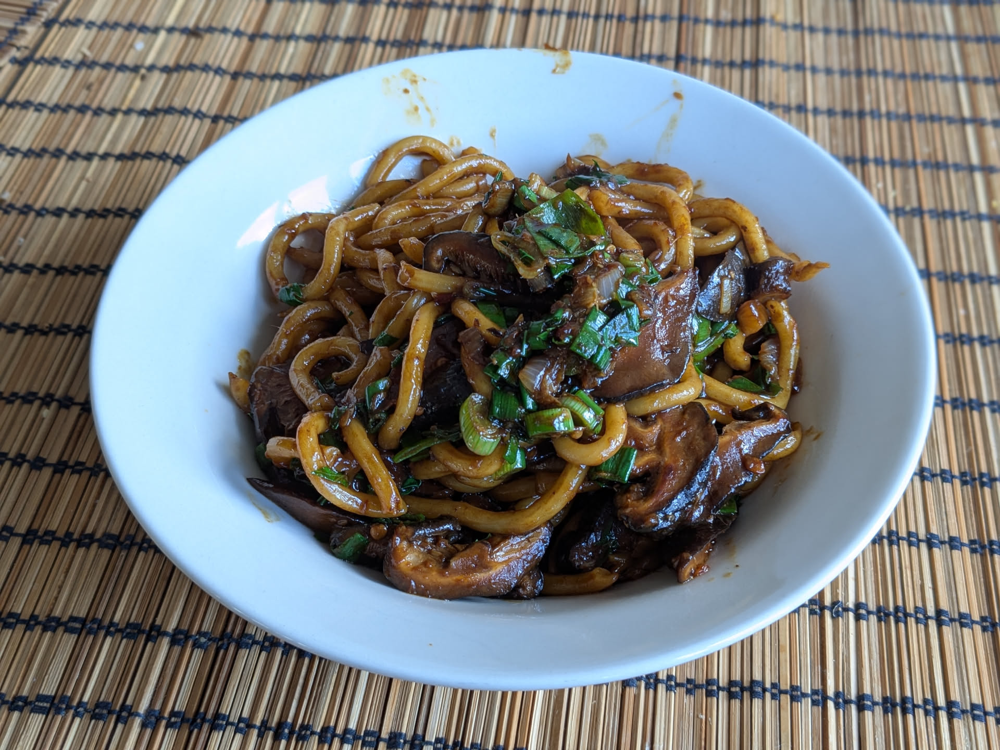

Nouilles udon sautées aux champignons

Pour 2 personnes :
- 400g de nouilles udon précuites (vérifier sur le paquet qu'on peut les préparer sans cuisson à l'eau)
- 10-12 shiitake (frais ou séchés)
- Trois petits oignons frais
- Deux cuillères à soupe de pâte d'ail et de gingembre (voir remarque ci-dessous)
- Une demi-cuillère à soupe de miel
- Une cuillère à soupe de sauce d'huitre
- Trois cuillères à soupe de sauce soja claire
- Une cuillère à soupe de sauce soja foncée (remplaçable par de la sauce soja claire)
- Une cuillère à soupe de vinaigre de riz
- (Facultatif) Une demi-cuillère à soupe d'huile de sésame
- (Facultatif) Une cuillère à soupe de sauce au chili ou de sriracha
- Quatre cuillères à soupe d'eau, ou de bouillon de légumes, ou d'eau de trempage des champignons
- De l'huile neutre à haut point de fumée (colza, tournesol, arachide…)
- Si on utilise des shiitake séchés, les faire tremper dans de l'eau bouillante pendant au moins une heure avant le début de la cuisson.
- Couper les oignons frais en rondelles, en séparant le blanc et le vert. Couper les champignons en rondelles. Mélanger tous les ingrédients liquides (sauf l'huile de cuisson) dans un bol.
- Chauffer un wok (ou une grosse poêle sans revêtement antiadhésif) à feu fort. Ajouter de l'huile quand le wok est bien chaud, y faire revenir le blanc des oignons frais quelques instants. Quand ils commençent tout juste à brunir, les enlever en laissant l'huile dans le wok.
- Ajouter les champignons et les faire revenir jusqu'à ce qu'ils brunissent bien. Les réserver avec les oignons frais.
- Ajouter un peu d'huile dans le wok, y faire revenir les nouilles quelques instants. Ajouter la sauce assez rapidement, et faire réduire le tout en mélangeant en permanence.
- Lorsqu'il n'y a plus de sauce liquide au fond du wok et que les nouilles sont bien couvertes de sauce, rajouter les champignons et les oignons blancs et verts, faire revenir encore un peu, et servir chaud.
Remarque : la pâte d'ail et de gingembre se trouve dans les magasins vendant des produits indiens ou pakistanais. On peut aussi la substituer par deux gousses d'ail émincées et un pouce de gingembre frais émincé, auquel cas mieux vaut faire revenir les deux au début, en même temps que les oignons frais (mais pas trop longtemps, il ne faut pas que ça brûle).